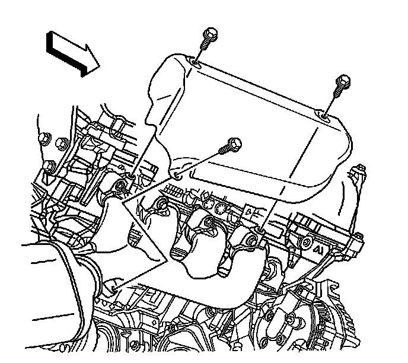

Exhaust Manifold Heat Shield Replacement - Right Side (V8 With LHD)
Exhaust Manifold Heat Shield Replacement - Right Side (V8 With LHD)
Removal Procedure
Caution: Refer to Exhaust Service Caution (Service Precautions) .
Caution: Refer to Protective Goggles and Glove Caution (Protective Goggles and Glove Warning) .

1. Remove the generator assembly. Refer to Generator Replacement (LY7 - Gas, 6 Cylinder, 3.6L, SFI, V6) (Generator Replacement)Generator Replacement (LH2 (AWD)) (Generator Replacement)Generator Replacement (LH2 (RWD)) (Generator Replacement) .
2. Remove the exhaust system. Refer to Exhaust System Replacement (Service and Repair) .
3. Disconnect the Bank 1, Sensor 1 oxygen sensor pigtail electrical connector from the wiring harness connector.
4. If the vehicle is equipped with all wheel drive (AWD), remove the right outer tie rod end from the steering knuckle to gain access to the exhaust manifold shield bolts. Refer to Rack and Pinion Outer Tie Rod End Replacement (Service and Repair) .
5. Remove the bolts securing the engine wiring harness bracket to the right cylinder head.
Position the wiring harness bracket aside to aid in the removal of the exhaust manifold shield.
6. Remove the bolts securing the exhaust manifold heat shield to the exhaust manifold.
7. Reposition the exhaust manifold shield forward in vehicle in the area where the generator mounts, to gain access to the exhaust manifold bolts.
8. Remove the exhaust manifold from the vehicle. Refer to Exhaust Manifold Replacement - Right Side (LP1, LY7, LLT) ()Exhaust Manifold Replacement - Right Side (V8 and LHD) (Exhaust Manifold Replacement - Right Side (V8 and LHD)) .
9. Remove the heat shield from the vehicle.
Installation Procedure
1. Position the exhaust manifold shield to the vehicle, where the generator mounts, to allow for exhaust manifold installation.
2. Install the exhaust manifold. Refer to Exhaust Manifold Replacement - Right Side (LP1, LY7, LLT) ()Exhaust Manifold Replacement - Right Side (V8 and LHD) (Exhaust Manifold Replacement - Right Side (V8 and LHD)) .
3. Install the exhaust manifold shield to the exhaust manifold.
Notice: Refer to Fastener Notice (Fastener Notice) .
4. Install the bolts securing the exhaust manifold heat shield to the exhaust manifold.
Tighten the bolts to 10 N.m (89 lb in).
5. Install the bolts securing the engine wiring harness bracket to the right cylinder head.
Tighten the engine wiring harness bracket bolts to 45 N.m (33 lb ft).
6. If previously removed, install the right outer tie rod end to the steering knuckle. Refer to Rack and Pinion Outer Tie Rod End Replacement (Service and Repair) .
7. Connect the Bank 1, Sensor 1 oxygen sensor pigtail electrical connector to the wiring harness connector.
8. Install the exhaust system. Refer to Exhaust System Replacement (Service and Repair) .
9. Install the generator assembly. Refer to Generator Replacement (LY7 - Gas, 6 Cylinder, 3.6L, SFI, V6) (Generator Replacement)Generator Replacement (LH2 (AWD)) (Generator Replacement)Generator Replacement (LH2 (RWD)) (Generator Replacement) .